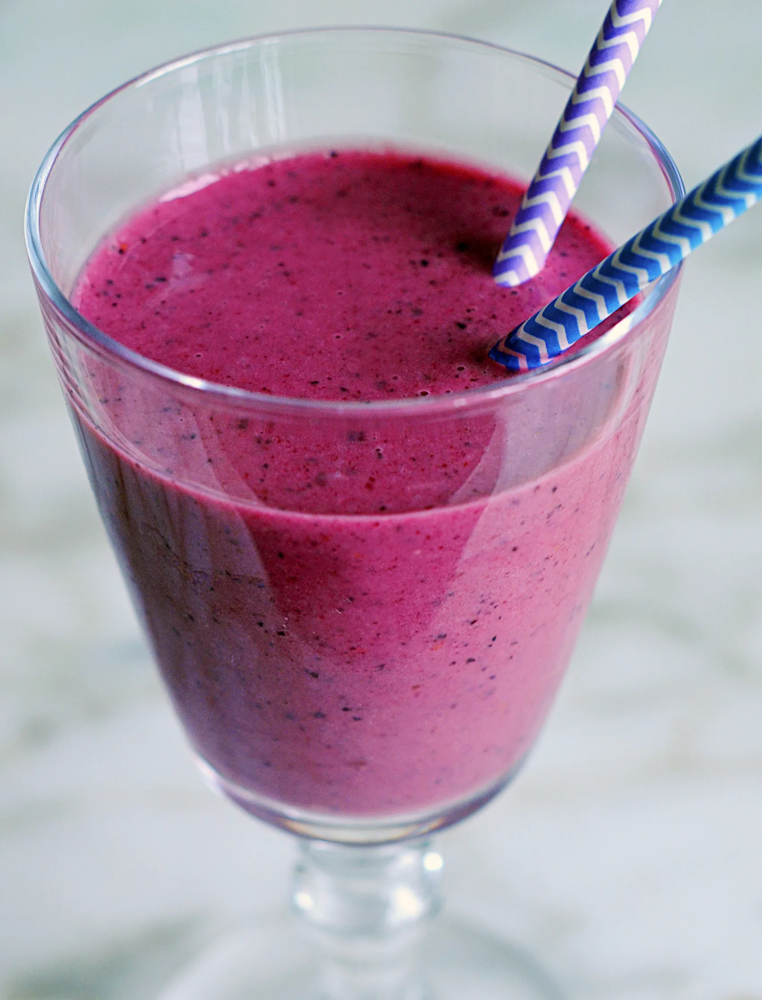

Smoothie

Description
This fruit-packed smoothie is a little sweet, a little tart & a lot healthy! Greek yogurt makes it extra thick and creamy.
Ingredients
- 1 frozen ripe banana, peeled and cut into 1-inch pieces
- 1 cup frozen berries
- ½ cup low fat plain Greek yogurt
- ½ cup pomegranate juice, plus more if necessary
- 4 teaspoons honey
Steps
- Combine all of the ingredients in a blender and purée until smooth. Depending on the type of blender you have, you may need to stop and stir occasionally to help it along. If the mixture is too thick, add 2 tablespoons more pomegranate juice and blend again. Pour into glasses and serve cold.